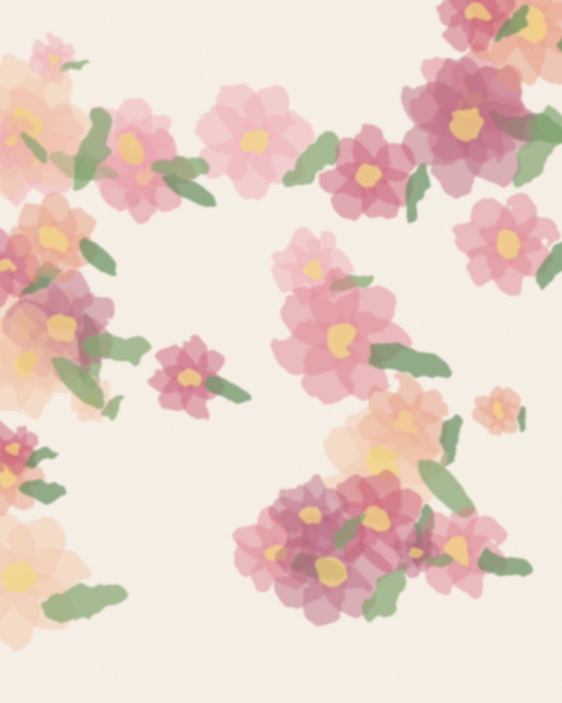
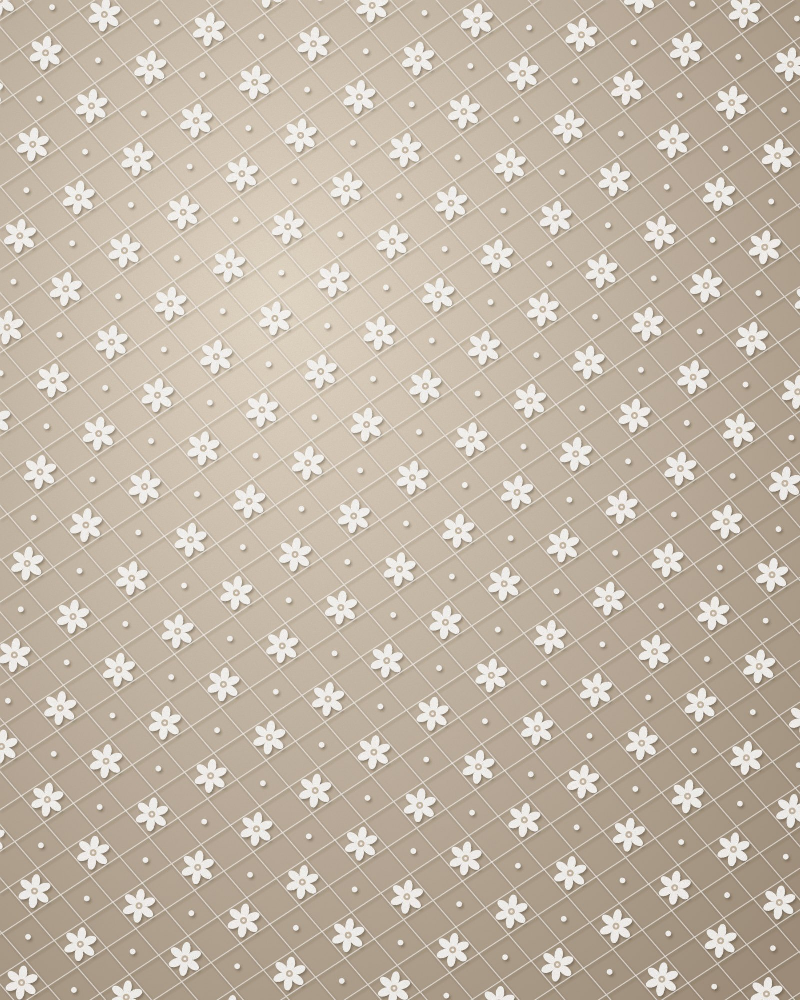
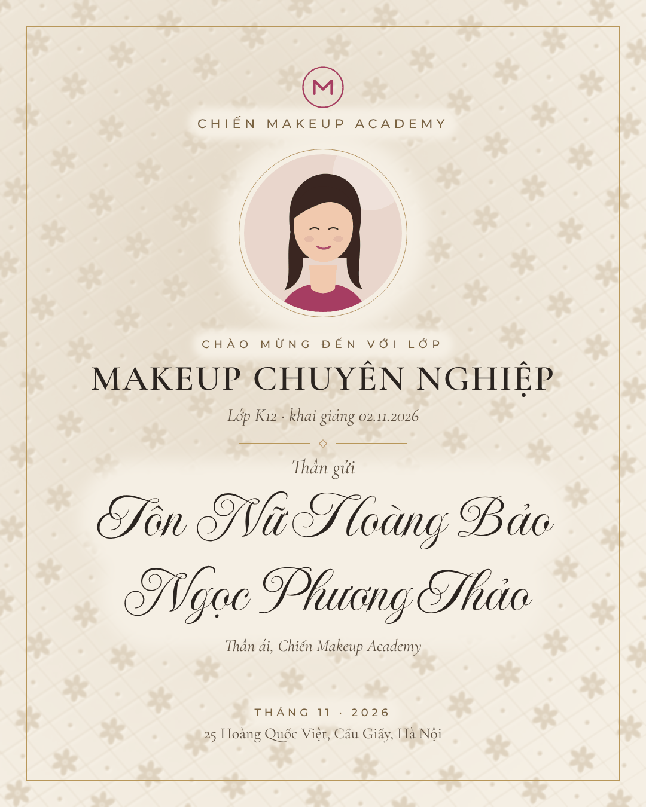

Ảnh nền của studio → app tự làm chìm
Studio tải ảnh lên một lần. App bỏ màu, tô lại bằng hai màu của mẫu, khoét chỗ ảnh và chữ ký, rồi tự hạ độ đậm tới khi mọi dòng chữ đạt chuẩn tương phản.

Ảnh tải lên 1: tranh hoa màu nước rực (giả lập)
→
Thẻ ra: độ đậm ; app đã tự đo, mọi dòng chữ đạt chuẩn

Ảnh tải lên 2: vải ren trắng trên nền be (giả lập)
→

Thẻ ra: app tự đảo chiều sáng tối (ren trắng thành nét chìm), độ đậm